")
Dungeoneering - Herblore Tables
Herblore in Daemonheim is only accessible to RuneScape Members. Please subscribe to get this feature.
You must have completed Druidic Ritual to make potions within Daemonheim.
Introduction
To clean herbs in Daemonheim, you must be raiding a dungeon on the following complexity level:
Complexity level 5+ - Herblore
Click here to read more about Herblore in RuneScape.
Cleaning Herbs
The process of cleaning a herb is exactly the same as outside of Daemonheim: find a grimy herb and, if you have the Herblore level to clean it, simple right-click it and select 'Clean'.
| Herb | Level Required To Clean | Experience Gained From Cleaning |
![[image]](../../img/main/kbase/skills/dungeoneering/items/seeds_plants_cloth/grimy_sagewort.gif) Sagewort Sagewort |
3 |
2.1 |
![[image]](../../img/main/kbase/skills/dungeoneering/items/seeds_plants_cloth/grimy_valerian.gif) Valerian Valerian |
4 |
3.2 |
![[image]](../../img/main/kbase/skills/dungeoneering/items/seeds_plants_cloth/grimy_aloe.gif) Aloe Aloe |
8 |
4.0 |
![[image]](../../img/main/kbase/skills/dungeoneering/items/seeds_plants_cloth/grimy_wormwood.gif) Wormwood leaf Wormwood leaf |
34 |
7.2 |
![[image]](../../img/main/kbase/skills/dungeoneering/items/seeds_plants_cloth/grimy_magebane.gif) Magebane Magebane |
37 |
7.7 |
![[image]](../../img/main/kbase/skills/dungeoneering/items/seeds_plants_cloth/grimy_featherfoil.gif) Featherfoil Featherfoil |
41 |
8.6 |
![[image]](../../img/main/kbase/skills/dungeoneering/items/seeds_plants_cloth/grimy_winters_grip.gif) Winter's grip Winter's grip |
67 |
12.7 |
![[image]](../../img/main/kbase/skills/dungeoneering/items/seeds_plants_cloth/grimy_lycopus.gif) Lycopus Lycopus |
71 |
13.1 |
| Buckthorn | 74 |
13.8 |
Making Potions
To make potions in Daemonheim, you must be raiding a dungeon on the following complexity level:
Complexity level 5+ - Herblore
As with cleaning herbs, making potions in Daemonheim is very similar to making potions in the rest of RuneScape. You will need a cleaned herb, a secondary ingredient (gathered from the drops of monsters about Daemonheim, or from the smuggler in the starting room) and a vial of water to make a potion. Vials can be bought from the smuggler and filled with water at any of the frequent water points strewn around Daemonheim.
Potion |
Herblore Level Needed |
Primary Ingredient Needed |
Secondary Ingredient Needed |
Herblore Experience Gained |
Product Effect Per Dose |
![[image]](../../img/main/kbase/skills/dungeoneering/items/potions/weak_magic_potion.gif) Weak magic potion |
3 |
Sagewort |
![[image]](../../img/main/kbase/skills/dungeoneering/items/potions/void_dust.gif) Void dust |
21 | Boosts Magic by 4 + 10% of Magic level |
![[image]](../../img/main/kbase/skills/dungeoneering/items/potions/weak_ranged_potion.gif) Weak ranged potion |
5 |
Valerian |
Void dust |
34 | Boosts Ranged by 4 + 10% of Ranged level |
| 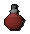 Weak melee potion |
7 |
Valerian |
![[image]](../../img/main/kbase/skills/dungeoneering/items/potions/misshapen_claw.gif) Misshapen claw |
37.5 | Boosts Attack and Strength by 4 + 10% of each level |
| 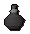 Weak defence potion |
9 |
Aloe |
Void dust |
41 | Boosts Defence by 4 + 10% of Defence level |
| 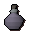 Weak stat restore potion |
12 |
Aloe |
![[image]](../../img/main/kbase/skills/dungeoneering/items/potions/red_moss.gif) Red moss |
47 | Restores stats (not Prayer or Summoning) by 5 + 12% of skill level |
![[image]](../../img/main/kbase/skills/dungeoneering/items/potions/weak_cure_potion.gif) Weak cure potion |
15 |
Aloe |
Firebreath whiskey |
53.5 | Cures disease and poison. Makes immune to both and dragon fire for 5 minutes. |
| 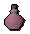 Weak rejuvenation potion |
18 |
Aloe |
Misshapen claw |
57 | Restores Prayer and Summoning points by 4 + 8% of skill level |
| 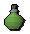 Weak poison |
21 |
Sagewort |
Firebreath whiskey |
61 | Weapon poison that starts at 20 damage |
![[image]](../../img/main/kbase/skills/dungeoneering/items/potions/weak_gatherers_potion.gif) Weak gatherer's potion |
24 |
Sagewort |
Red moss |
65 | Boosts Woodcutting, Mining and Fishing by 3 + 2% of levels |
![[image]](../../img/main/kbase/skills/dungeoneering/items/potions/weak_artisans_potion.gif) Weak artisan's potion |
27 |
Valerian |
Red moss |
68.5 | Boosts Smithing, Crafting, Fletching, Construction and Firemaking by 3 + 2% of levels |
![[image]](../../img/main/kbase/skills/dungeoneering/items/potions/weak_naturalists_potion.gif) Weak naturalist's potion |
30 |
Sagewort |
Misshapen claw |
72 | Boosts Cooking, Farming, Herblore and Runecrafting by 3 + 2% of levels |
![[image]](../../img/main/kbase/skills/dungeoneering/items/potions/weak_survivalists_potion.gif) Weak survivalist's potion |
33 |
Valerian |
Firebreath whiskey |
75 | Boosts Agility, Thieving, Hunter and Slayer by 3 + 2% of levels |
![[image]](../../img/main/kbase/skills/dungeoneering/items/potions/magic_potion.gif) Magic potion |
36 |
Wormwood leaf |
Void dust |
79.5 | Boosts Magic by 5 + 14% of Magic level |
![[image]](../../img/main/kbase/skills/dungeoneering/items/potions/ranged_potion.gif) Ranged potion |
38 |
![[image]](../../img/main/kbase/skills/dungeoneering/items/potions/magebane.gif) Magebane |
Void dust |
83 | Boosts Ranged by 5 + 14% of Ranged level |
![[image]](../../img/main/kbase/skills/dungeoneering/items/potions/melee_potion.gif) Melee potion |
40 |
Magebane |
Misshapen claw |
86.5 | Boosts Attack and Strength by 5 + 14% of skill level |
![[image]](../../img/main/kbase/skills/dungeoneering/items/potions/defence_potion.gif) Defence potion |
42 |
![[image]](../../img/main/kbase/skills/dungeoneering/items/potions/featherfoil.gif) Featherfoil |
Void dust |
89 | Boosts Defence by 5 + 14% of Defence level |
![[image]](../../img/main/kbase/skills/dungeoneering/items/potions/stat_restore_potion.gif) Stat restore potion |
45 |
Featherfoil |
Red moss |
93 | Restores stats (not Prayer or Summoning) by 7 + 17% of skill level |
![[image]](../../img/main/kbase/skills/dungeoneering/items/potions/cure_potion.gif) Cure potion |
48 |
Featherfoil |
Firebreath whiskey |
98.5 | Cures disease and poison. Makes immune to both and dragon fire for 10 minutes. |
| 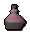 Rejuvenation potion |
51 |
Featherfoil |
Misshapen claw |
105.5 | Restores Prayer and Summoning points by 7 + 15% of skill level |
![[image]](../../img/main/kbase/skills/dungeoneering/items/potions/poison.gif) Poison |
54 |
Wormwood leaf |
Firebreath whiskey |
114 | Weapon poison that starts at 40 damage |
![[image]](../../img/main/kbase/skills/dungeoneering/items/potions/gatherers_potion.gif) Gatherer's potion |
57 |
Wormwood leaf |
Red moss |
123.5 | Boosts Woodcutting, Mining and Fishing by 4 + 4% of levels |
| 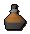 Artisan's potion |
60 |
Magebane |
Red moss |
131 | Boosts Smithing, Crafting, Fletching, Construction and Firemaking by 4 + 4% of levels |
![[image]](../../img/main/kbase/skills/dungeoneering/items/potions/naturalists_potion.gif) Naturalist's potion |
63 |
Wormwood leaf |
Misshapen claw |
139.5 | Boosts Cooking, Farming, Herblore and Runecrafting by 4 + 4% of levels |
| 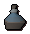 Survivalist's potion |
66 |
Magebane |
Firebreath whiskey |
147 | Boosts Agility, Thieving, Hunter and Slayer by 4 + 4% of levels |
![[image]](../../img/main/kbase/skills/dungeoneering/items/potions/strong_magic_potion.gif) Strong magic potion |
69 |
![[image]](../../img/main/kbase/skills/dungeoneering/items/potions/winters_grip.gif) Winter's grip |
Void dust |
155.5 | Boosts Magic by 6 + 20% of Magic level |
![[image]](../../img/main/kbase/skills/dungeoneering/items/potions/strong_ranged_potion.gif) Strong ranged potion |
71 |
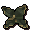 Lycopus |
Void dust |
160 | Boosts Ranged by 6 + 20% of Ranged level |
| 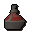 Strong melee potion |
73 |
Lycopus |
Misshapen claw |
164 | Boosts Attack and Strength by 6 + 20% of each level |
![[image]](../../img/main/kbase/skills/dungeoneering/items/potions/strong_defence_potion.gif) Strong defence potion |
75 |
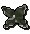 Buckthorn |
Void dust |
170.5 | Boosts Defence by 6 + 20% of Defence level |
![[image]](../../img/main/kbase/skills/dungeoneering/items/potions/strong_stat_restore_potion.gif) Strong stat restore potion |
78 |
Buckthorn |
Red moss |
173.5 | Restores stats (not Prayer or Summoning) by 10 + 24% of skill level |
| 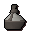 Strong cure potion |
81 |
Buckthorn |
Firebreath whiskey |
178 | Cures disease and poison. Makes immune to both and dragon fire for 20 minutes. |
![[image]](../../img/main/kbase/skills/dungeoneering/items/potions/strong_rejuvenation_potion.gif) Strong rejuvenation potion |
84 |
Buckthorn |
Misshapen claw |
189.5 | Restores Prayer and Summoning points by 10 + 22% of skill level |
Strong poison |
87 |
Winter's grip |
Firebreath whiskey |
205.5 | Weapon poison that starts at 60 damage |
| 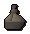 Strong gatherer's potion |
90 |
Winter's grip |
Red moss |
234 | Boosts Woodcutting, Mining and Fishing by 6 + 6% of levels |
![[image]](../../img/main/kbase/skills/dungeoneering/items/potions/strong_artisans_potion.gif) Strong artisan's potion |
93 |
Lycopus |
Red moss |
253 | Boosts Smithing, Crafting, Fletching, Construction and Firemaking by 6 + 6% of levels |
| 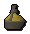 Strong naturalist's potion |
96 |
Winter's grip |
Misshapen claw |
279 | Boosts Cooking, Farming, Herblore and Runecrafting by 6 + 6% of levels |
| 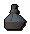 Strong survivalist's potion |
99 |
Lycopus |
Firebreath whiskey |
315.5 | Boosts Agility, Thieving, Hunter and Slayer by 6 + 6% of levels |

More articles in
Dungeoneering
|
|
|
Further Help
If this article does not help you, you may find the following sections of the RuneScape site helpful:
|
|